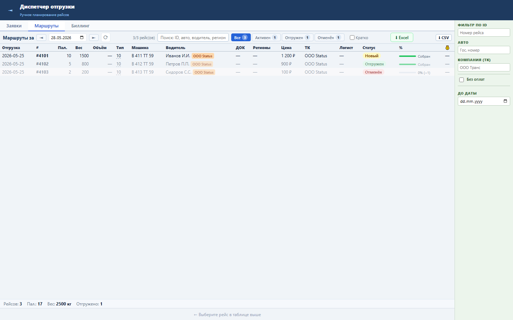
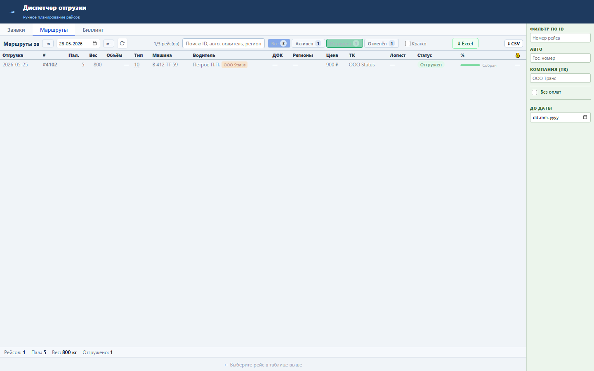
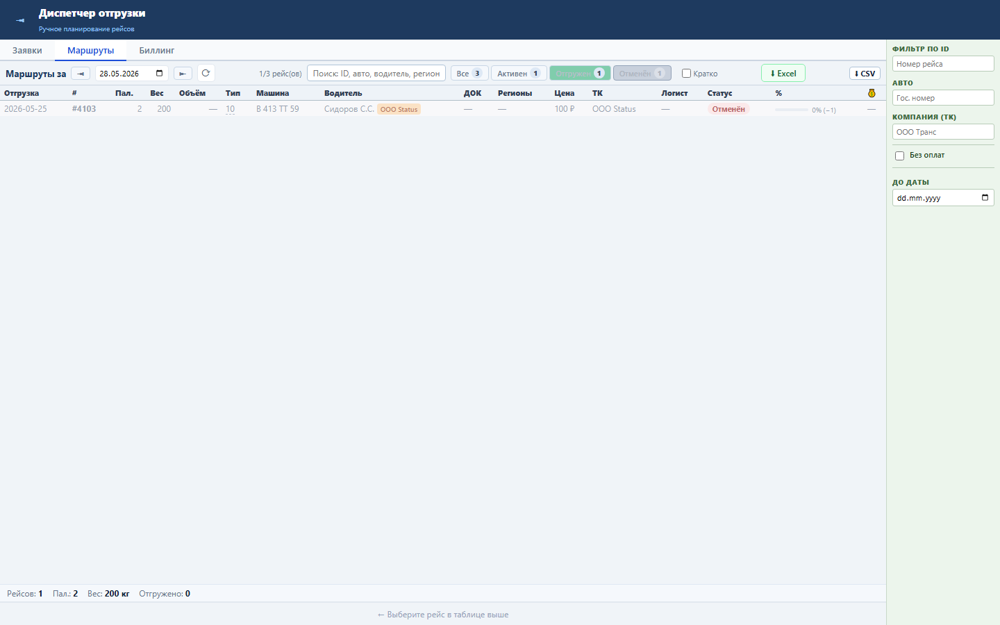

Блок ускоряет контроль маршрутов: диспетчер отделяет активные рейсы от отгруженных и отменённых без нового запроса к серверу.
Фильтр работает по уже загруженному списку tasks и полю CONDITION. Счётчики строятся для «Все», «Активен», «Отгружен», «Отменён».
Во вкладке «Маршруты» появились кнопки статусов со счётчиками, таблица мгновенно показывает только нужную группу рейсов.



Проверка: functional, UI smoke и load gate пройдены.